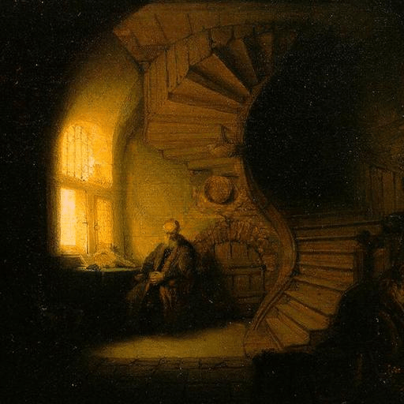

第36卦 地火明夷：把光藏進口袋
上卦：地（☷） ・ 下卦：火（☲）

核心意義
光明受到遮蔽，正直的人可能遭受打壓。這是一段需要韜光養晦的時期；外在的黑暗無法改變，但內在的明亮可以由你守護。收斂鋒芒、養精蓄銳，內心保持光明與堅定，等待重見天日的時刻。
「我在暗夜中收斂光芒，以內在的明亮守護心中的正道。」
祝福
願你在黑暗的日子裡，依然守住內心的光，靜靜等待天亮。
五大類別指引
感情
關係可能正處於低潮或誤解的暗期，真誠不被看見、付出不被理解。此刻不宜急著解釋或證明；守住自己的真心，用時間證明一切，黑暗總會過去，真誠終將被看見。
守住真心，不急於解釋與證明：
- 給彼此時間，讓真誠被看見。
- 低潮期先照顧自己的感受。
事業
職場上可能遇到不公平的對待，努力被忽視或成果被埋沒。此時不宜正面衝突，也不需自暴自棄；收斂鋒芒、靜靜累積實力，把委屈化為成長的動力，屬於你的光終會亮起。
收斂鋒芒、靜靜累積實力：
- 不正面衝突，也不自暴自棄。
- 把委屈化為成長的動力。
健康
身心可能正處於低能量的暗期，容易感到疲憊與鬱悶。此時最重要的是照顧好內在的燈火；減少不必要的消耗、多接觸讓你安心的人事物，讓心情有機會慢慢回暖。
減少不必要的消耗，守護內在能量：
- 多接觸讓你安心的人事物。
- 允許自己休息，等待心情回暖。
財運
財務上可能正面臨壓抑的時期，投資不順或收入受限。此時不宜躁進翻本，也不宜四處張揚困境；守住基本盤、減少不必要開支，等待環境轉好的時機再圖發展。
守住基本盤，減少不必要開支：
- 不躁進翻本，不張揚困境。
- 等待環境轉好再圖發展。
人際
你可能正經歷被誤解或被邊緣化的感受，解釋了卻不被接受。此時不必苦苦自證；保持一貫的為人處事，讓時間與行動說話，真正了解你的人會留下。
保持一貫的為人，不苦苦自證：
- 讓時間與行動替你說話。
- 珍惜仍願意相信你的人。